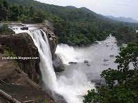

Perunthenaruvi

Perunthenaruvi Waterfalls are waterfalls 36 km from Pathanamthitta in Pathanamthitta District, Central Travancore region, Kerala State, India. It is a popular tourist destination situated in Vechoochira Panchayat of Ranni taluk. The one shore of this waterfall is Kudamurutty and Vechoochira is the other.
Malayalappuzha
Malayalappuzha Devi Temple is a Bhadrakali temple situated at Malayalappuzha in Pathanamthitta in Kerala, India. Nearest Railway station is Chengannur railway station It is believed that the temple was built more than 1000 years ago.
Mangomeadous
The Aranmula Parthasarathy Temple is a Hindu temple located near Aranmula, a village in Pathanamthitta District, Kerala, South India. It is dedicated to the God Krishna, an avatar of Vishnu, who is worshipped as Parthasarathy.